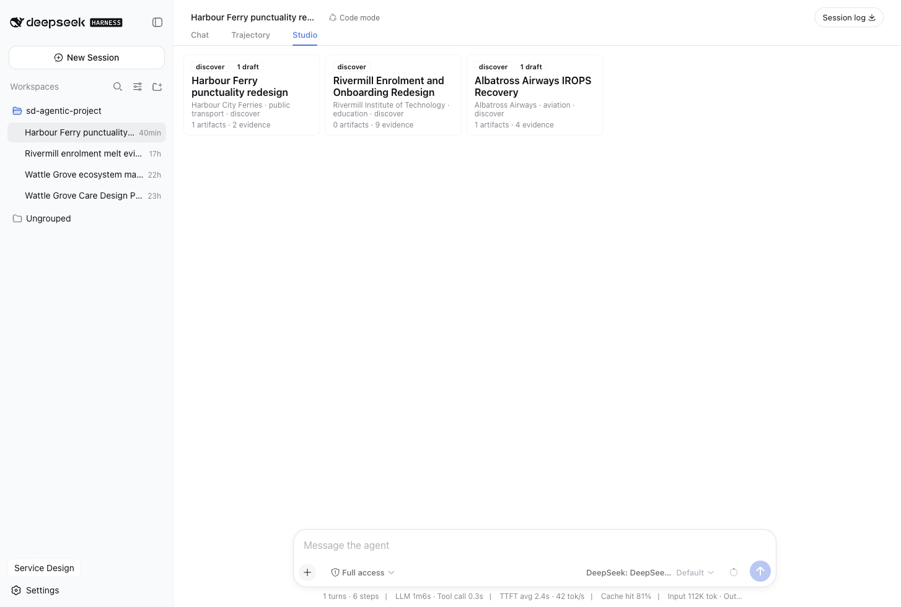

FEATURED
The AI-First Service Design Operating System
Service design operating model and agent-team methodology
View experiment ↗Sam Mozaffari · service designer · agentic practice
39 documented engagements across health, banking, transport, aviation and luxury hospitality — each separates verified execution evidence from illustrative service-design scenarios.
A progressive path from foundational theory to autonomous enterprise operations. Learn by doing with real multi-agent swarms, cryptographic evidence registers, and living service blueprints.
Moving from workshop theater to an executable service OS. Grounded in Service-Dominant Logic & the 10-role Eve topology.
View course & deck → 02 FoundationDeepSeek Harness Studio, the 29-tool engine, a stdio MCP server with 228 resources and 10 role prompts, and deterministic artifact rendering.
View course & deck → 03 FoundationThe Law of Artifacts: SHA-256 evidence registers, adversarial Critic review-veto-log, and sd_factcheck in CI/CD.
View course & deck → 04 IntermediateMining 200+ transcripts with parallel extraction swarms, eliminating bias, and calculating true behavioral signatures.
View course & deck → 05 IntermediateIndi Young task towers, dynamic sentiment curves calculated from verbatim quotes, and in-place remediation.
View course & deck → 06 IntermediateThe 5 canonical lanes and the Sixth Lane: autonomous AI agent swarms, tool invocations, and escalation paths.
View course & deck → 07 AdvancedOmnichannel orchestration, Wizard-of-Oz prototyping with agent backends, versioned SOPs-as-code, and frontline co-pilots.
View course & deck → 08 Advanced3-tier KPI trees, automated Lou Downe 15 Good Services audits, recovery paradox SLAs, and continuous living blueprints.
View course & deck →The full service design arc, run as machine-checked craft — every movement lands as typed artifacts a client can audit, not slideware.
Contextual inquiry, interviews, diary studies — every quote content-addressed into an evidence register.
Affinity clustering, behavioural personas, insight sets — themes only where the register supports them.
Journey maps, five-lane service blueprints, ecosystem and stakeholder maps — every node cites evidence.
How-might-we reframes, concept briefs, opportunity matrices — divergence with provenance, convergence at a gate.
Storyboards, walkthrough scripts, pilot and test reports — evidence from test runs, never assumptions.
KPI trees, Good Services audits, maturity models — baselines and sources on every row.
One engine, four delivery surfaces — the same practice, wherever a designer actually works.
Ten role agents, 80 skills and the /asd command for Claude Code — compiled to 12 emitted targets: OpenCode, Codex, Kimi, Grok, AGY, Pi and more.
MCP29 tools, 228 resources and 10 role prompts — pack-local service-design capability for supported MCP clients.
CLIThe engine in a terminal: scripted engagements, deterministic fact-checks, CI gates that fail on unevidenced claims.
WorkbenchA service-design studio inside the harness — projects dashboard, artifact gallery, evidence register, review board. Everything a plugin.

Wattle Grove Community Care, end to end in one session: evidence in, three gated artifacts out, and the moment the machine refused an unevidenced stage — with screenshots of every step.
Read the run →16 pages of platform documentation — install, concepts, tutorials, full reference and bounded integrations.
Open the docs →Six engagements, and the exact platform surface each one exercises.
See the use cases →Service design operating model and agent-team methodology
View experiment ↗B2C digital onboarding (telehealth benefit)
View project ↗B2C/B2B claims journey (motor, home, fleet)
View project ↗B2C membership experience redesign (transformation staging)
View project ↗B2B account management for freight, warehousing, and returns
View project ↗Retail and SME banking service reset (discovery research program)
View method ↗B2C prescription pickup + click-and-collect (omni-channel retail health)
View project ↗B2C + B2B2C utility service (smart-meter rollout, digital account service)
View project ↗B2C irregular operations (disruption recovery)
View project ↗B2B2C SaaS platform service (gradebook + parent communication)
View project ↗B2C public service — reactive housing repairs (report to completion and invoice)
View project ↗Cross-provider health ecosystem orchestration (B2B2C)
View project ↗B2C click & collect and returns across web, app, store, email, and courier channels
View project ↗B2B SaaS onboarding, activation, and habit formation
View project ↗Public on-demand transport (evening minibus + app + community stops)
View method ↗B2C reservation, dining, and special-occasion service design
View project ↗B2B aftermarket service concepts, predictive maintenance, and service contracting
View project ↗Employer-funded 12-week preventive coaching programme
View project ↗B2C complaint handling and recovery across app, web, call centre, billing, field operations, and ombudsman handoff
View project ↗B2C and broker-assisted national claims rollout
View project ↗Billing, connections, and SME onboarding service quality management
View project ↗Branch advisory and SME onboarding frontline enablement
View project ↗B2B equipment, parts, service contracts, and customer portal governance
View project ↗B2B logistics operations design for outbound shipments and returns
View project ↗Citizen account and planning applications service
Read note ↗B2B uptime and energy outcome partnerships
Read note ↗Personal-lines renewals across direct and broker channels
Read note ↗Service-design operating model and SOP library
View experiment ↗AI-native service design operating model and continuous service layer
View experiment ↗B2C urban mobility (bus + light rail)
View project ↗B2B field service and outcome contracts
View project ↗B2C virtual consultations and virtual ward
View project ↗B2B digital onboarding, lending, cash-flow tools
View project ↗B2C luxury lodging and stay experience
View project ↗In-home care visit scheduling and continuity of care
View experiment ↗Cross-agency severe-weather and accessible transport recovery
View experiment ↗B2B cross-border payments redesign; outpatient chemotherapy pathway redesign
View experiment ↗Makerspace equipment lending and workshop programming
View experiment ↗The executable form of the practice — a ten-role agent team, 80 shipped method skills, evidence-cited review gates and 12 emitted targets.
View tool ↗39 practice-vocabulary rows, 38 registered artifact kinds and seven authored templates — with explicit runtime and roadmap status.
View tool ↗One canonical practice, compiled to 12 emitted targets — Claude Code, OpenCode, Codex, MCP, DeepSeek Harness, BUZZ, Grok, AGY and more.
View tool ↗80 shipped method skills encoded as executable SOPs — one flagship service-blueprinting skill replaces its generated twin.
View method ↗A 20-book service design library, 159 chapters, mapped to every method in the practice — the provenance layer under every artifact.
Read note ↗The platform manual: getting started on each surface, the engine tools, the artifact catalog and the method library — ground-truthed against the running engine.
Read the manual ↗Nothing matches.
Try a different search, or clear the filters to see the whole archive.